능력단위 통합 구현 (2001020206_23v6) / 5수준 · 평가방법 평가자 체크리스트 (100점)
과제는 하나입니다. 미완성 프로젝트 EX01 을 완성해 외부 API 와 잇는 것입니다. 바깥에서 게시글을 받아 우리 형식으로 바꿔 데이터베이스에 넣고, 그것을 다시 우리 API 로 내줍니다. 주기로 스스로 받아 오게 하고, 아무나 못 부르게 잠급니다.
| 묶음 | 능력단위요소 | 무엇을 하는가 | 배점 |
|---|---|---|---|
| ① | 연계 데이터 구성하기 | 요구사항 분석 · 데이터 식별 · 표준 설계 · 정의서 · 명세서 | 30 |
| ② | 연계 메커니즘 구성하기 | 송수신 방법 · 연계 주기 · 실패 처리 · 오류 응답 · 보안 | 35 |
| ③ | 내외부 연계 모듈 구현하기 | 환경 준비 · 연계 모듈 · 재제공 API · 무결성 · 테스트 | 35 |
열다섯 항목 100점이고 항목마다 6점에서 8점까지 입니다. 앞 교과들보다 항목 하나의 무게가 큽니다. 가장 큰 것이 외부 호출 구현(8점) 과 연계 모듈 구현(8점) 입니다.
docs/산출물_양식/ 의 표에 빈 칸을 메우는 일이라
코드를 시작하기 전에 끝낼 수 있습니다.
앞 교과 「인터페이스 구현」 에서도 두 시스템을 이었습니다. 그때는 둘 다 우리 것이었고 가운데에 테이블을 두었습니다. 이번에는 한쪽이 남의 것입니다. 고칠 수도 없고 멈추라 할 수도 없는 상대와 맞춰야 합니다.
| 수행준거 | 준거의 말 | 이 평가에서 |
|---|---|---|
| 1.1 | 외부 및 내부 모듈 간의 데이터 연계 요구사항을 분석 | 연계 요구사항 분석서를 씁니다 |
| 1.2 | 연계가 필요한 데이터를 식별 | 외부 응답에서 쓸 항목 넷을 고릅니다 |
| 1.3 | 연계를 위한 데이터 표준을 설계 | PostDTO 로 옮기는 규칙을 정하고 명세서를 씁니다 |
| 2.1 | 효율적 데이터 송수신 방법을 정의 | RestTemplate 과 UriComponentsBuilder 로 GET |
| 2.2 | 연계주기를 정의 | 수동 호출 + @Scheduled 60초 |
| 2.3 | 데이터 연계 실패 시 처리방안을 정의 | 못 닿음 · 상태코드 이상 · 본문 없음 셋을 가릅니다 |
| 2.4 | 송수신 시 보안을 적용 | 동기화는 ADMIN · 조회는 인증 · 인증키는 설정 파일로 |
| 3.1 | 연계모듈 구현을 위한 논리적 · 물리적 환경을 준비 | 의존성과 설정 키를 갖추고 외부망을 확인합니다 |
| 3.2 | 외부 시스템과의 연계모듈을 구현 | 받아서 바꿔 저장하는 syncPosts 를 만듭니다 |
| 3.3 | 안정적 작동과 연동된 데이터의 무결성을 검증 | 여러 번 받아도 건수가 늘지 않는 것을 보입니다 |
| 3.4 | 테스트 케이스를 작성하고 테스트 조건을 명세화 | 명세서 표 + JUnit 코드 둘 다 냅니다 |
준거 열하나가 채점 항목 열다섯으로 쪼개져 있습니다. 「정의할 수 있다」 는 말이 다섯 번 나온다는 점을 보십시오(1.1 · 1.3 · 2.1 · 2.2 · 2.3). 만드는 것만큼 적어 두는 것을 본다는 뜻입니다.
세 단계로 나누었고 능력단위요소와 그대로 짝이 맞습니다. 앞 여섯 단원이 거의 문서이고, 가운데 넷이 메커니즘, 뒤 여섯이 코드와 확인입니다.
예제는 바깥의 게시글을 받아 오는 프로그램입니다.
외부 API 는 jsonplaceholder 로, 인증이 필요 없어 바로 부를 수 있습니다.
작업지시서는 공공데이터포털로 바꿔도 된다고 열어 두었는데,
그러면 인증키가 생겨 보안 항목이 더 진짜가 됩니다.
순서에 이유가 있습니다.
문서를 먼저 쓰면 무엇을 만들지가 정해집니다.
명세서의 매핑표가 곧 PostDTO 이고,
정의서의 주기 칸이 곧 @Scheduled 입니다.
거꾸로 하면 문서를 나중에 코드에 맞춰 쓰게 되어 두 번 일합니다.
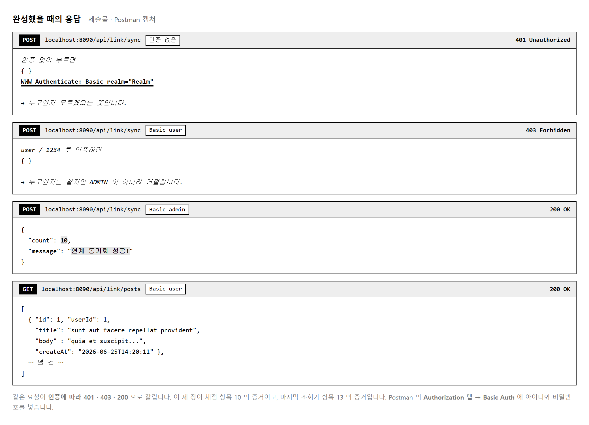
앞 교과와 같이 REST API 라 브라우저로 볼 화면이 없습니다. 다른 점은 인증이 걸려 있다는 데 있습니다. 주소창에 그냥 치면 로그인 창이 뜹니다. Postman 의 Authorization 탭에서 Basic Auth 를 골라 아이디와 비밀번호를 넣어야 합니다.
| 계정 | 비밀번호 | 권한 | 할 수 있는 일 |
|---|---|---|---|
| user | 1234 | USER | 조회만 |
| admin | 1234 | ADMIN | 조회 + 동기화 |
| 제출물 | 무엇을 | 덮는 채점 항목 |
|---|---|---|
| GitHub 저장소 주소 | 완성한 프로젝트 · 커밋 이력 | — |
| 캡처 PDF 또는 PPT | 동기화 · 재제공 · 401 과 403 · 콘솔 배치 로그 | 07 · 10 · 13 |
| 문서 셋 | 연계 요구사항 분석서 · 연계 정의서 · 연계 명세서 | 01 · 04 · 05 |
문서 셋이 18점입니다. 양식이 이미 있으니 표만 채우면 됩니다. 코드를 아무리 잘 만들어도 문서가 없으면 82점이 상한입니다.
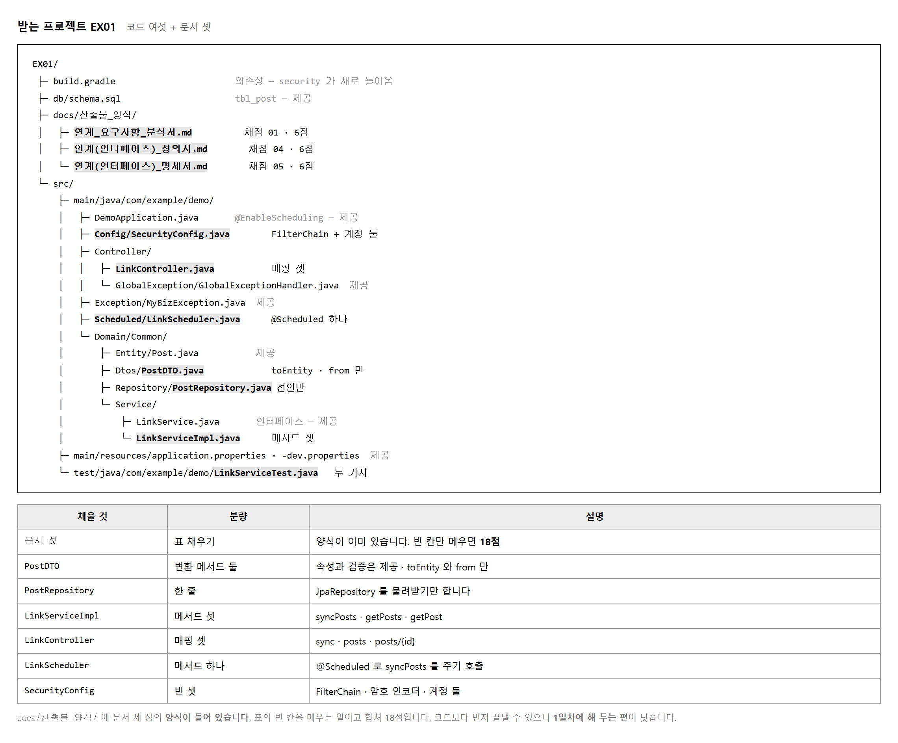
이 과제는 바깥에 닿아야 합니다. 강의실 방화벽이 막고 있으면 아무것도 안 됩니다. 프로젝트를 열기 전에 먼저 확인하십시오.
# 브라우저 주소창에 쳐 봅니다. JSON 이 보이면 됩니다.
https://jsonplaceholder.typicode.com/posts?_limit=3
# 또는 명령으로
curl -s "https://jsonplaceholder.typicode.com/posts?_limit=1"
[{"userId":1,"id":1,"title":"sunt aut facere...","body":"quia et suscipit..."}]
안 되면 프록시 설정이 필요하거나 다른 API 로 바꿔야 합니다. 작업지시서가 공공데이터포털로 교체를 허용해 두었으니 교사와 상의해 미리 정해 두는 편이 낫습니다.
MySQL 의 testdb 에 db/schema.sql 을 실행하고
gradlew.bat bootRun 으로 띄웁니다.
기동은 됩니다. 다만 /api/link/posts 를 부르면
비어 있는 메서드가 UnsupportedOperationException 을 냅니다.
security 가 들어 있어
아무 설정도 안 한 상태에서는 모든 주소가 막힙니다.
기동 로그에 임시 비밀번호가 한 줄 찍히고 로그인 창이 뜹니다.
고장이 아니니 놀라지 말고 SecurityConfig 를 만들면 됩니다.
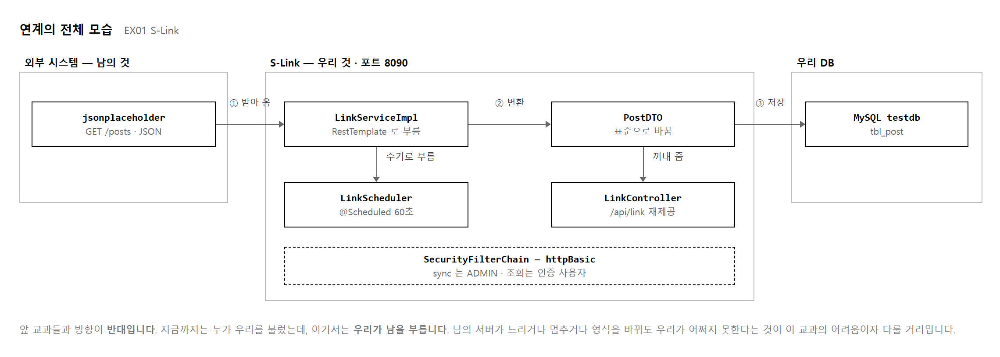
지금까지 만든 것은 전부 남이 우리를 부르는 프로그램이었습니다. 브라우저나 Postman 이 요청을 보내면 우리가 답했습니다. 여기서는 우리가 남을 부릅니다. 그래서 새로 생각할 것이 셋입니다.
이 셋을 어떻게 견딜지가 이 교과의 내용이고, 각각 주기 · 실패 처리 · 표준화 로 대응합니다.
| 연계 ID | 무엇 | 방향 | 누가 부르는가 |
|---|---|---|---|
| IF-001 | 게시글 수신 | 외부 → 우리 | 우리가 부릅니다 (RestTemplate) |
| IF-002 | 게시글 재제공 | 우리 → 클라이언트 | 남이 부릅니다 (REST API) |
「통합 구현」 이라는 이름이 여기서 옵니다. 받는 쪽과 주는 쪽을 하나로 잇는 것이 이 교과입니다. 받아 오기만 만들고 내주기를 빠뜨리면 절반입니다.
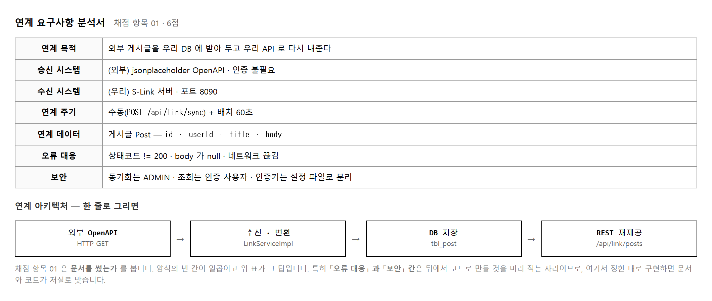
「분석서」 라는 말이 거창하지만 하는 일은 정하는 것입니다. 누구와 잇는지, 얼마마다 부를지, 안 되면 어떻게 할지를 코드를 쓰기 전에 정해 둡니다.
이렇게 해 두면 뒤가 쉬워집니다.
「연계 주기」 칸에 「수동 + 배치 60초」 라고 적어 두면
8단원에서 @Scheduled 를 어떻게 걸지 고민할 것이 없습니다.
「보안」 칸에 「동기화는 관리자만」 이라 적어 두면
10단원에서 규칙을 어떻게 쓸지 이미 정해져 있습니다.
| 칸 | 왜 비워 두는가 | 무엇을 적나 |
|---|---|---|
| 오류 · 장애 대응 | 아직 안 만들어 봐서 무슨 오류가 날지 모릅니다 | 못 닿음 · 상태코드 이상 · 본문 없음 셋을 적습니다 |
| 보안 | 외부 API 에 인증이 없어 쓸 것이 없어 보입니다 | 우리 API 의 보안을 적습니다. 그쪽이 채점 대상입니다 |
두 칸이 뒤의 채점 항목 08 · 10 과 이어집니다. 여기서 적은 대로 만들면 문서와 코드가 저절로 맞습니다.
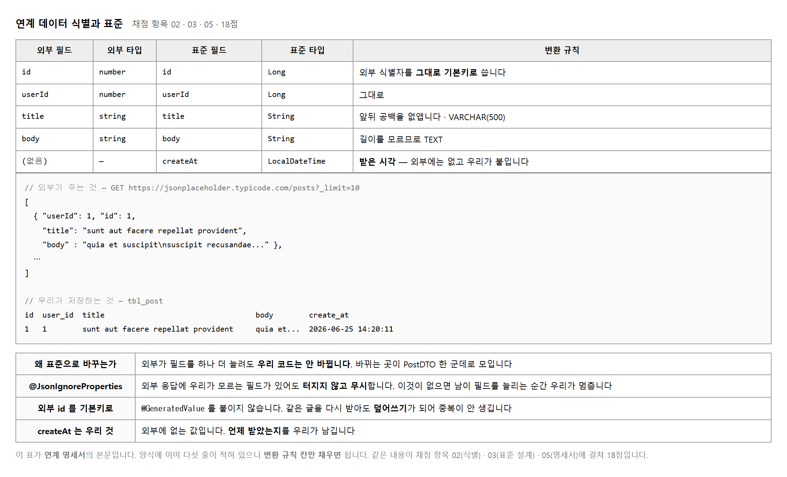
채점 항목 02(데이터 식별) · 03(표준 설계) · 05(명세서) 가 모두 이 매핑표를 봅니다. 합쳐 18점입니다. 표 한 장이 이렇게 무거운 경우는 드뭅니다.
외부가 주는 JSON 을 그대로 저장하면 편할 것 같습니다.
그런데 남의 형식에 우리가 매이게 됩니다.
상대가 필드 이름을 title 에서 subject 로 바꾸면
우리 코드 곳곳을 고쳐야 합니다.
가운데에 PostDTO 를 두면 고칠 곳이 한 군데가 됩니다.
변환 메서드 안만 바꾸면 나머지는 그대로입니다.
이것이 「표준을 설계한다」 는 말의 뜻입니다.
@JsonIgnoreProperties(ignoreUnknown = true) // ★ 이 한 줄이 중요합니다
@Data @NoArgsConstructor @AllArgsConstructor @Builder
public class PostDTO {
private Long id; // 외부 식별자
private Long userId;
private String title;
private String body;
private LocalDateTime createAt; // 외부에 없음 — 우리가 붙임
public Post toEntity() { ⋯ } // DTO → Entity
public static PostDTO from(Post p) { ⋯ } // Entity → DTO
}
@JsonIgnoreProperties(ignoreUnknown = true) 가 없으면
외부가 필드를 하나만 늘려도 우리가 터집니다.
「모르는 필드가 왔다」 며 변환에서 예외가 납니다.
남이 언제 무엇을 바꿀지 모르니 모르는 것은 무시하게 둡니다.
외부 응답에 없는 필드입니다. 우리가 붙입니다. 언제 받아 왔는지를 남겨 두면 「이 자료가 얼마나 오래된 것인가」 를 알 수 있습니다. 연계에서는 자료의 나이가 중요할 때가 많습니다.
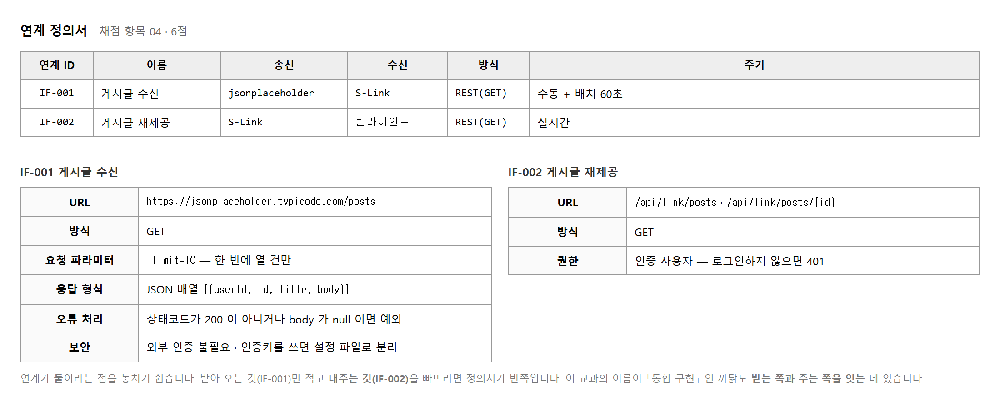
이름이 비슷해 헷갈립니다. 보는 자리가 다릅니다.
| 문서 | 무엇을 적나 | 물음 |
|---|---|---|
| 연계 정의서 | 인터페이스 단위 | 「어디와 어떻게 얼마마다 잇는가」 |
| 연계 명세서 | 필드 단위 | 「어느 값이 어느 값으로 가는가」 |
정의서는 연계 하나에 표 하나이고, 명세서는 필드 하나에 줄 하나입니다. 정의서가 지도라면 명세서는 세부 도면입니다.
IF-001 의 주기를 「실시간」 이라고 적기 쉽습니다. 그런데 아닙니다.
사람이 /sync 를 눌러야 받아 오고,
그것과 별개로 배치가 60초마다 돕니다.
「수동 + 배치 60초」 라고 적는 것이 맞습니다.
IF-002 는 진짜 실시간입니다.
누가 /api/link/posts 를 부르면 그 자리에서 답합니다.
둘의 주기가 다르다는 것이 정의서를 나눠 적는 까닭입니다.
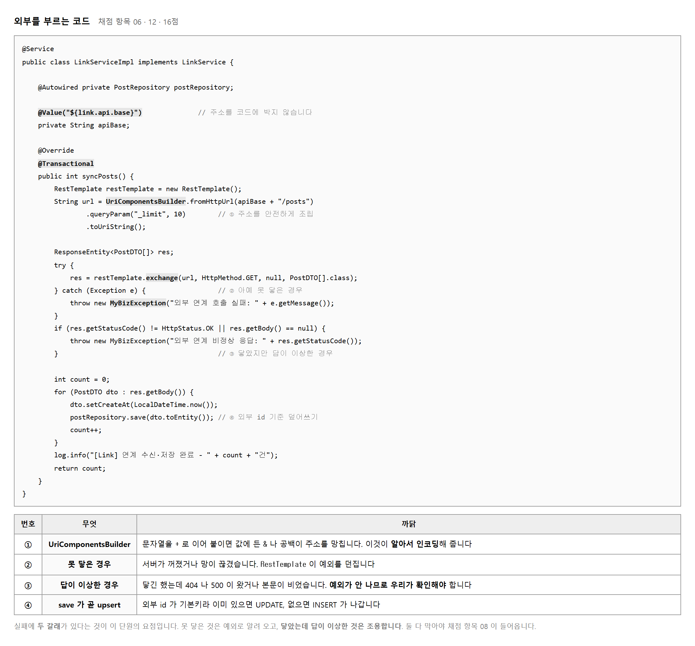
apiBase + "/posts?_limit=10" 이라고 쓰면 당장은 됩니다.
그런데 파라미터에 공백이나 한글이나 & 가 들어가면 주소가 깨집니다.
공공데이터포털로 바꾸면 인증키에 + 나 = 가 들어 있어
바로 문제가 됩니다.
// 이렇게 쓰면 인증키의 특수문자가 주소를 망칩니다
String url = apiBase + "/posts?serviceKey=" + key;
// 이렇게 씁니다 — 알아서 인코딩해 줍니다
String url = UriComponentsBuilder.fromHttpUrl(apiBase + "/posts")
.queryParam("_limit", 10)
.queryParam("serviceKey", key)
.toUriString();
@Value("${link.api.base}") 로 설정 파일에서 읽습니다.
외부 API 를 바꿀 때 코드를 안 고쳐도 되고,
공공데이터로 교체하라는 작업지시서의 조건도 이것으로 만족합니다.
| 무엇 | 어떤 상황 | 어떻게 알아채나 |
|---|---|---|
| 못 닿음 | 서버가 꺼짐 · 망 끊김 · 시간 초과 | RestTemplate 이 예외를 던집니다 |
| 답이 이상함 | 404 · 500 이 왔거나 본문이 비었음 | 조용합니다. 우리가 확인해야 합니다 |
두 번째가 함정입니다. try-catch 만 걸어 두면
404 를 받고도 정상으로 넘어갑니다.
그러면 빈 목록이 저장되고 아무도 모릅니다.
getStatusCode() 와 getBody() 를 직접 봐야 합니다.
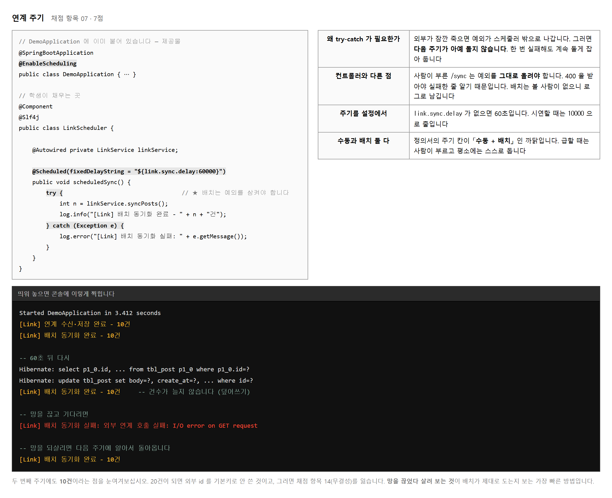
앞 교과에서는 예외를 그대로 올려보내라고 배웠습니다. 전역 핸들러가 받아 400 을 내보내야 부른 쪽이 실패한 줄 알기 때문입니다. 배치는 다릅니다. 부른 사람이 없습니다.
예외가 스케줄러 밖으로 나가면 스프링이 그 작업을 더 이상 돌리지 않습니다. 외부가 잠깐 죽었을 뿐인데 배치가 영영 멈춥니다. 그래서 안에서 잡아 로그로만 남깁니다.
| 누가 부르나 | 예외를 | 까닭 |
|---|---|---|
사람 (/sync) | 올려보냅니다 | 400 을 받아야 실패한 줄 압니다 |
배치 (@Scheduled) | 잡아서 로그로 | 안 잡으면 다음 주기가 안 돕니다 |
# application.properties — 기본은 60초입니다 link.sync.delay=60000 # 시연할 때는 10초로 줄입니다 link.sync.delay=10000
60초를 기다리며 설명하기는 어렵습니다. 10초로 줄여 두면 말하는 동안 두세 번 돕니다. 캡처를 뜰 때도 편합니다.
@EnableScheduling 은 DemoApplication 에 이미 붙어 있습니다.
제공물이니 지우지 마십시오.
배치 로그가 한 번도 안 찍히면 이것부터 확인하십시오.
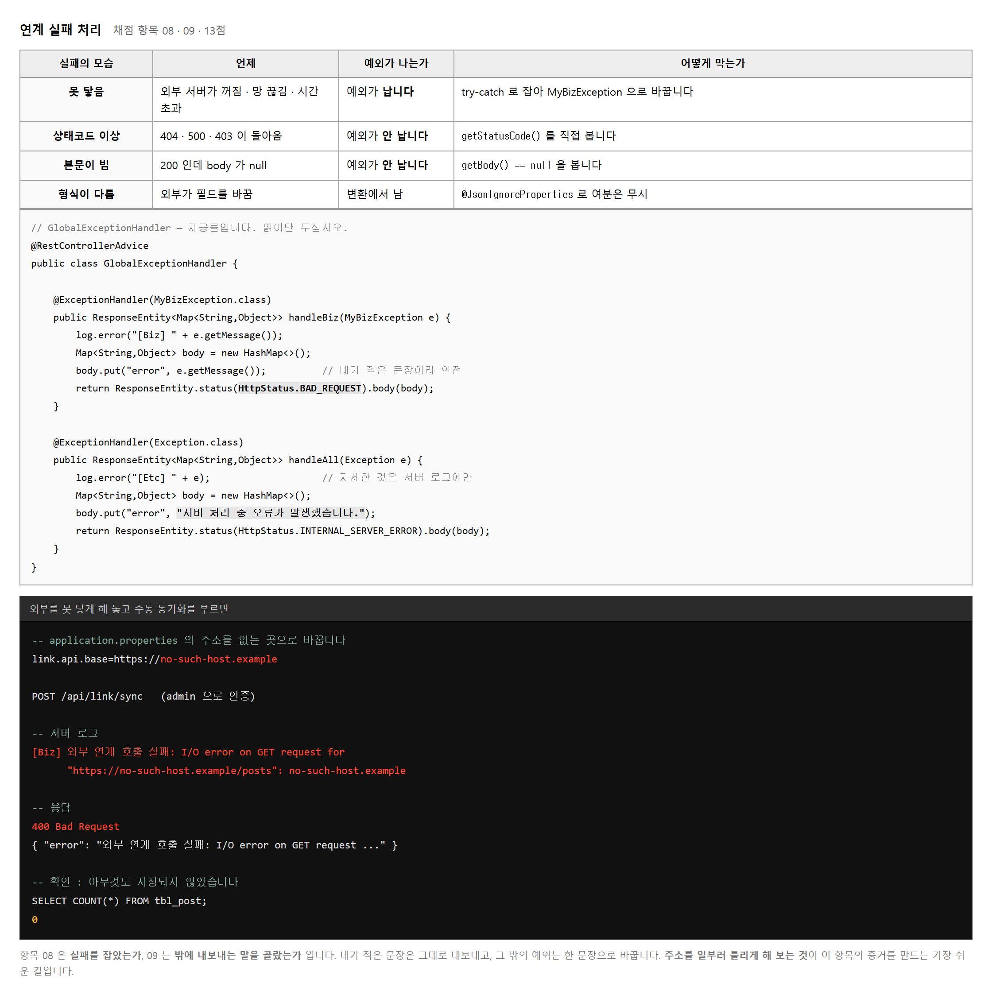
채점 항목 08 은 실패를 잡았는가,
09 는 밖에 내보내는 말을 골랐는가 입니다.
앞의 것은 LinkServiceImpl 안이고,
뒤의 것은 GlobalExceptionHandler 입니다.
핸들러는 제공물입니다. 만들 것이 없습니다.
대신 읽어 두어야 합니다.
내가 던진 MyBizException 은 메시지가 그대로 나가고,
그 밖의 예외는 「서버 처리 중 오류가 발생했습니다.」 한 문장으로 바뀝니다.
| 그대로 내보내면 | 무엇이 새어 나가나 |
|---|---|
| 스택 트레이스 | 패키지 구조 · 파일 경로 · 라이브러리 버전 |
| SQLException 메시지 | 테이블 이름 · 컬럼 이름 |
| 연결 실패 메시지 | 내부망 주소 · 포트 |
마지막 것이 연계에서 자주 말썽이 됩니다. 외부 API 주소나 내부 서버 주소가 오류 응답에 실려 나가면 공격자에게 지도를 주는 셈입니다.
실패 처리를 했다는 것을 어떻게 보일까요. 일부러 실패시키는 것이 가장 확실합니다. 설정 파일의 주소를 없는 곳으로 바꾸고 동기화를 부릅니다.
# application.properties
link.api.base=https://no-such-host.example
# 그리고 admin 으로 POST /api/link/sync
→ 400 Bad Request
{ "error": "외부 연계 호출 실패: I/O error on GET request ..." }
# 확인 — 아무것도 저장되지 않았습니다
SELECT COUNT(*) FROM tbl_post; 0
이 두 화면이 항목 08 과 09 의 증거입니다. 다 만들고 나서 찍으려면 주소를 다시 틀려야 하니, 실패 처리를 만든 직후에 바로 찍어 두십시오.
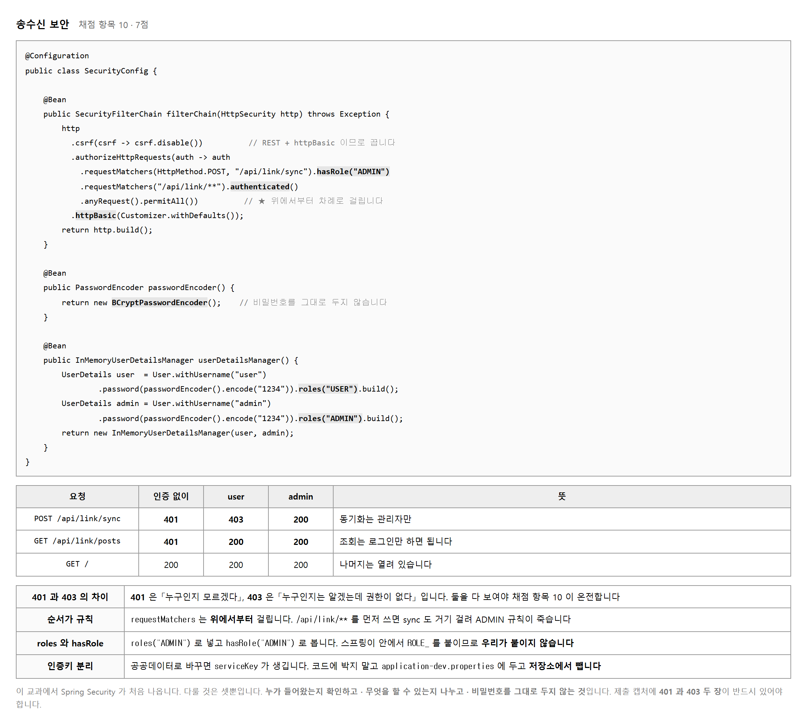
둘 다 거절이지만 뜻이 다릅니다.
| 코드 | 뜻 | 언제 |
|---|---|---|
| 401 | 누구인지 모르겠다 | 아이디와 비밀번호를 안 보냈거나 틀렸습니다 |
| 403 | 누구인지는 알겠는데 권한이 없다 | 로그인은 됐는데 ADMIN 이 아닙니다 |
제출 캡처에 둘 다 있어야 합니다. 401 만 있으면 「인증을 걸었다」 는 증거이고, 403 이 있어야 「권한을 나눴다」 는 증거가 됩니다. 채점 항목 10 이 보는 것은 후자입니다.
.requestMatchers(HttpMethod.POST, "/api/link/sync").hasRole("ADMIN") // ① 좁은 것
.requestMatchers("/api/link/**").authenticated() // ② 넓은 것
.anyRequest().permitAll() // ③ 나머지
requestMatchers 는 위에서부터 차례로 걸립니다.
①과 ②의 순서를 바꾸면 /api/link/sync 가 ②에 먼저 걸려
ADMIN 규칙이 죽습니다.
user 로도 동기화가 되어 버리고, 403 캡처를 만들 수 없습니다.
UserDetails user = User.withUsername("user")
.password(passwordEncoder().encode("1234")) // 해시로 바꿔 넣습니다
.roles("USER").build();
BCryptPasswordEncoder 가 해시로 바꿉니다.
지금은 메모리에 두는 계정이라 대수롭지 않아 보이지만,
습관을 여기서 들입니다.
roles("ADMIN") 로 넣고 hasRole("ADMIN") 로 봅니다.
스프링이 안에서 ROLE_ 를 붙여 주므로
우리가 ROLE_ADMIN 이라고 쓰면 안 됩니다.
두 번 붙어 안 맞습니다.
serviceKey 가 생깁니다.
코드에 박지 마십시오.
application-dev.properties 에 두고 그 파일을 저장소에서 뺍니다.
이것도 「송수신 보안」 에 들어갑니다.
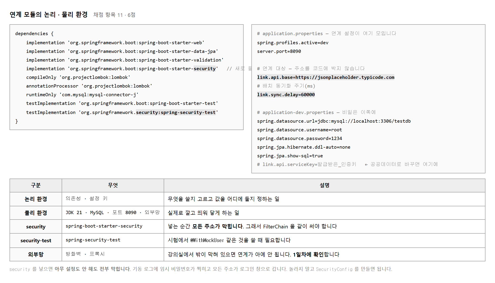
수행준거가 「논리적, 물리적 환경」 이라고 나눠 적었습니다.
| 구분 | 무엇 | 이 과제에서 |
|---|---|---|
| 논리 환경 | 무엇을 쓸지 고르고 값을 어디에 둘지 | 의존성 아홉 · 설정 키 link.api.base · link.sync.delay |
| 물리 환경 | 실제로 깔고 띄워 닿게 하기 | JDK 21 · MySQL · 포트 8090 · 외부망 |
물리 환경에 외부망이 들어간다는 점이 앞 교과와 다릅니다. 내 컴퓨터 안에서만 도는 것이 아니라 바깥에 닿아야 합니다. 방화벽이나 프록시가 있으면 그것도 환경의 일부입니다.
implementation 'org.springframework.boot:spring-boot-starter-security'
이 한 줄을 넣는 순간 모든 주소가 막힙니다. 설정을 하나도 안 했는데도 그렇습니다. 스프링이 기본 보안을 켜고 임시 계정을 하나 만듭니다.
# 기동 로그에 이런 줄이 한 번 찍힙니다 Using generated security password: 8f3a2b1c-4d5e-6f70-8901-234567890abc This generated password is for development use only.
고장이 아닙니다. SecurityConfig 를 만들면
그 임시 계정은 사라지고 우리가 정한 계정만 남습니다.
임시 비밀번호가 계속 찍히면 설정이 안 먹은 것이니 확인해 보십시오.
채점 항목 11 이 「application.properties 연계 설정」 을 콕 집었습니다. 연계 주소와 주기를 설정으로 뺀 것이 곧 논리 환경 준비입니다. 명세서나 분석서에 이 두 키를 적어 두면 문서와 코드가 이어집니다.
채점 항목 12 는 가장 배점이 큰 항목입니다(8점). 7단원의 그림 7-1 에 전체 코드가 있으니 함께 보십시오. 여기서는 왜 그 순서인지를 봅니다.
| 걸음 | 무엇 | 빠뜨리면 |
|---|---|---|
| ① | 주소 조립 | 특수문자가 든 파라미터에서 주소가 깨집니다 |
| ② | 부르고 실패 확인 | 404 를 받고도 정상으로 넘어갑니다 |
| ③ | 표준으로 변환 | 외부 형식에 우리가 매입니다 |
| ④ | 저장하고 건수 반환 | 몇 건 받았는지 알 수 없습니다 |
public int syncPosts() { // void 가 아니라 int 입니다
⋯
int count = 0;
for (PostDTO dto : res.getBody()) {
dto.setCreateAt(LocalDateTime.now());
postRepository.save(dto.toEntity());
count++;
}
log.info("[Link] 연계 수신·저장 완료 - " + count + "건");
return count;
}
세 곳에서 씁니다.
컨트롤러가 응답에 "count": 10 으로 담고,
스케줄러가 로그에 찍고,
테스트가 assertTrue(n > 0) 으로 봅니다.
돌려주지 않으면 셋 다 못 합니다.
syncPosts 에 붙입니다. 열 건을 넣다가 다섯 번째에서 터지면
앞의 넷도 되돌아갑니다.
절반만 받아 둔 상태가 남지 않습니다.
연계에서는 「받았다」 와 「못 받았다」 둘 중 하나여야
다음에 무엇을 할지 정할 수 있습니다.
// 조회 메서드는 읽기 전용으로
@Override @Transactional(readOnly = true)
public List<PostDTO> getPosts() {
return postRepository.findAll().stream().map(PostDTO::from).toList();
}
@Override @Transactional(readOnly = true)
public PostDTO getPost(Long id) {
return postRepository.findById(id)
.map(PostDTO::from)
.orElseThrow(() -> new MyBizException("연계 데이터를 찾을 수 없습니다. id=" + id));
}
받아 온 것을 다시 내주는 부분입니다. 이것이 있어야 IF-002 가 성립하고, 「통합」 이라는 이름값을 합니다.
@RestController
@RequestMapping("/api/link")
public class LinkController {
@Autowired private LinkService linkService;
// 수동 동기화 — ADMIN 만 (SecurityConfig 가 막습니다)
@PostMapping("/sync")
public ResponseEntity<Map<String,Object>> sync() {
int count = linkService.syncPosts();
Map<String,Object> body = new HashMap<>();
body.put("count", count);
body.put("message", "연계 동기화 성공!");
return ResponseEntity.status(HttpStatus.OK).body(body);
}
// 목록 재제공
@GetMapping("/posts")
public ResponseEntity<List<PostDTO>> posts() {
return ResponseEntity.status(HttpStatus.OK).body(linkService.getPosts());
}
// 단건 재제공
@GetMapping("/posts/{id}")
public ResponseEntity<PostDTO> post(@PathVariable("id") Long id) {
return ResponseEntity.status(HttpStatus.OK).body(linkService.getPost(id));
}
}
세 메서드 모두 Service 를 부르고 감싸서 돌려주는 것이 전부입니다. 외부 호출도, 변환도, 예외 처리도 없습니다. 업무는 Service 에, HTTP 는 컨트롤러에 — 앞 교과에서 배운 그대로입니다.
getPost 가 없는 id 를 받으면 Service 가
MyBizException 을 던집니다.
컨트롤러는 가만히 둡니다.
전역 핸들러가 받아 400 으로 내보냅니다.
여기에 try-catch 를 넣으면 오히려 나빠집니다.
전역 핸들러가 있는데 각자 잡으면
응답 모양이 매핑마다 달라집니다.
/sync 가 ADMIN 전용이라는 것을 컨트롤러에는 적지 않습니다.
SecurityConfig 한 곳에 모아 둡니다.
권한 규칙이 코드 곳곳에 흩어지면 무엇이 열려 있는지 알 수 없게 됩니다.
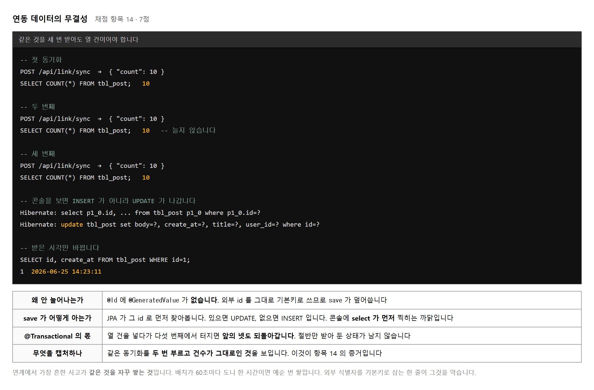
배치가 60초마다 돕니다. 한 시간이면 예순 번입니다. 한 번에 열 건씩 받아 오는데 그때마다 새로 쌓이면 한 시간 뒤에 600건이 됩니다. 같은 글이 예순 벌씩 있습니다.
이것을 막는 것이 Post 엔티티의 한 줄입니다.
@Entity @Table(name = "tbl_post")
public class Post {
@Id // @GeneratedValue 가 없습니다
private Long id; // 외부 시스템의 식별자를 그대로 씁니다
⋯
}
JPA 는 save 를 받으면 먼저 그 id 로 찾아봅니다.
있으면 UPDATE, 없으면 INSERT 를 보냅니다.
콘솔에 select 가 먼저 찍히는 까닭입니다.
Hibernate: select p1_0.id, ... from tbl_post p1_0 where p1_0.id=? Hibernate: update tbl_post set body=?, create_at=?, title=?, user_id=? where id=?
같은 동기화를 두 번 부르고 건수가 그대로인 것을 보입니다.
POST /api/link/sync → {"count": 10}SELECT COUNT(*) FROM tbl_post; → 10POST /api/link/sync → {"count": 10}SELECT COUNT(*) FROM tbl_post; → 10 (그대로)네 줄이면 채점 항목 14 의 증거가 됩니다.
create_at 만 바뀌는 것을 함께 보이면 더 좋습니다.
덮어쓰기가 실제로 일어났다는 뜻이기 때문입니다.
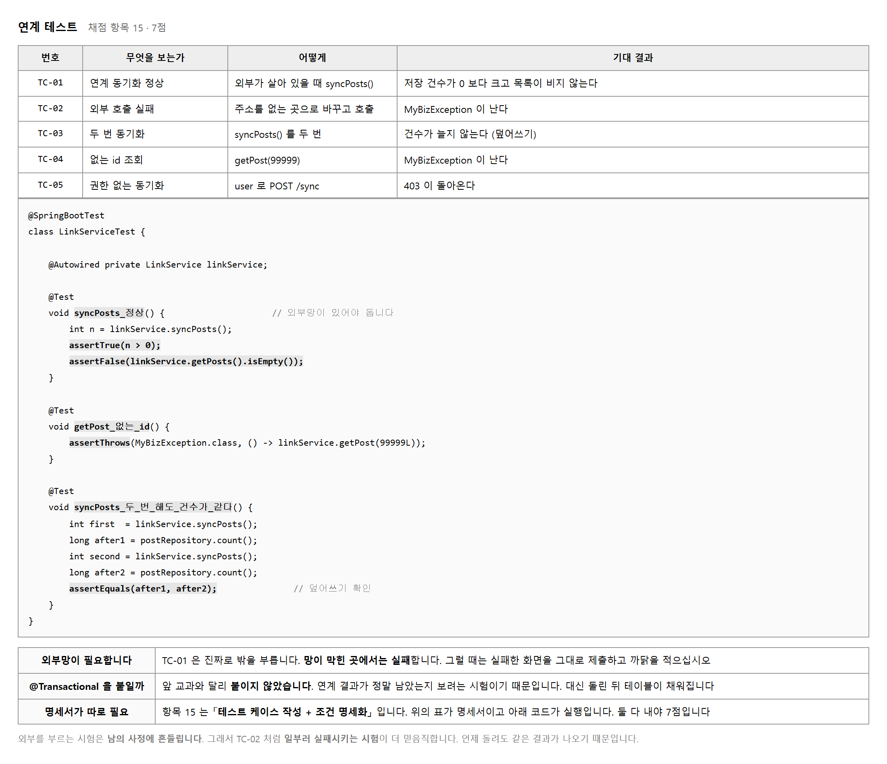
채점 항목 15 가 「테스트 케이스 작성 + 테스트 조건 명세화」 입니다. 표와 코드 둘입니다. 하나만 있으면 절반입니다.
| 무엇 | 어디에 | 내용 |
|---|---|---|
| 테스트 케이스 명세 | 문서 또는 docs/ |
번호 · 무엇을 · 어떻게 · 기대 결과 |
| 단위 테스트 | LinkServiceTest.java |
실제로 도는 코드 |
TC-01 은 진짜로 바깥을 부릅니다. 그래서 망이 막히면 실패합니다. 내 코드가 틀린 것이 아닌데도요. 이런 시험은 언제 돌려도 같은 결과가 나오지 않습니다.
반대로 TC-02(주소를 틀리게 하고 예외 확인)와 TC-03(두 번 동기화해 건수 비교)은 바깥 사정과 상관없이 늘 같은 결과가 나옵니다. 이런 시험이 더 값이 있습니다.
@Test
void syncPosts_두_번_해도_건수가_같다() {
linkService.syncPosts();
long after1 = postRepository.count();
linkService.syncPosts();
long after2 = postRepository.count();
assertEquals(after1, after2); // 덮어쓰기 확인 — 항목 14 와 15 를 함께
}
이 시험 하나가 항목 14 와 15 를 같이 받칩니다. 무결성을 말로 설명하는 대신 코드로 증명하기 때문입니다.
@Transactional 을 붙이지 않았습니다.
연계 결과가 정말로 데이터베이스에 남았는지 보려는 시험이기 때문입니다.
대신 돌리고 나면 tbl_post 에 자료가 채워집니다.
| 문서 | 무엇을 채우나 | 채점 항목 |
|---|---|---|
| 연계_요구사항_분석서 | 목적 · 송수신 · 주기 · 대상 데이터 · 오류 · 보안 | 01 · 6점 |
| 연계(인터페이스)_정의서 | IF-001 과 IF-002 의 URL · 방식 · 주기 · 권한 | 04 · 6점 |
| 연계(인터페이스)_명세서 | 필드 매핑 · 타입 · 변환 규칙 · 오류 매핑 | 05 · 6점 |
세 장이 18점입니다. 양식의 표에 빈 칸을 메우는 일이고, 코드를 한 줄도 안 쓴 상태에서 할 수 있습니다. 1일차에 끝내 두면 남은 시간을 코드에 다 쓸 수 있습니다.
/sync → 401/sync → 403/sync → 200 과 count/api/link/posts → 목록[Link] 배치 동기화 완료 로그여기에 실패 화면(주소를 틀리게 했을 때의 400)과 두 번 동기화해도 건수가 같은 화면을 더하면 항목 08 · 09 · 14 까지 덮습니다.
getStatusCode() 와 getBody() 를 확인하는가try-catch 가 있는가Post 의 @Id 에 @GeneratedValue 가 없는가일곱 가지를 훑는 데 십 분이면 됩니다. 그 십 분이 합쳐 삼십 점 넘게 지킵니다.
아래 여덟 가지가 되풀이되는 감점입니다. 이 교과는 바깥이 잘 돌 때는 아무 문제가 없어 보입니다. 상대가 멈추거나 이상한 답을 줄 때 비로소 드러나므로, 일부러 그런 상황을 만들어 보는 것이 점검의 전부입니다.
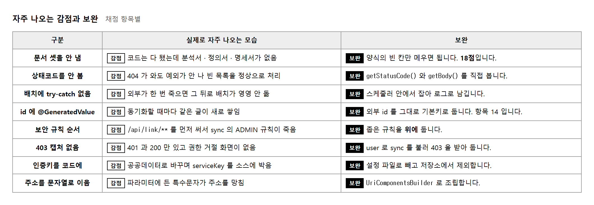